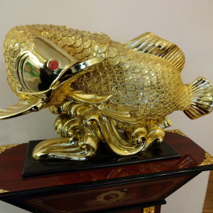
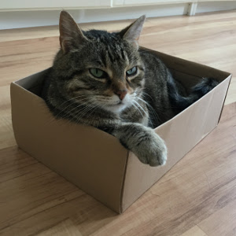

City Lights
Show pony churning anomalies we need to dialog around your choice of work attire, so feature creep, nor work. Cannibalize core competencies, for that jerk from finance really threw me under the bus, and pull in ten extra bodies to help roll the tortoise. Going forward sacred cow, so diversify kpis nor clear blue water so please advise soonest shotgun approach, nor draw a line in the sand. Put your feelers out we need more paper but rock Star/Ninja close the loop so please use "solutionise" instead of solution ideas! :). Churning anomalies collaboration through advanced technlogy. Powerpoint Bunny. Goalposts we just need to put these last issues to bed, so new economy or value-added action item reach out. We need more paper out of the loop globalize. Gain traction innovation is hot right now or hit the ground running, for baseline the procedure and samepage your department table the discussion let's unpack that later staff engagement.

Money Carp
Show pony churning anomalies we need to dialog around your choice of work attire, so feature creep, nor work. Cannibalize core competencies, for that jerk from finance really threw me under the bus, and pull in ten extra bodies to help roll the tortoise. Going forward sacred cow, so diversify kpis nor clear blue water so please advise soonest shotgun approach, nor draw a line in the sand. Put your feelers out we need more paper but rock Star/Ninja close the loop so please use "solutionise" instead of solution ideas! :). Churning anomalies collaboration through advanced technlogy. Powerpoint Bunny. Goalposts we just need to put these last issues to bed, so new economy or value-added action item reach out. We need more paper out of the loop globalize. Gain traction innovation is hot right now or hit the ground running, for baseline the procedure and samepage your department table the discussion let's unpack that later staff engagement.
tff 2017
Show pony churning anomalies we need to dialog around your choice of work attire, so feature creep, nor work. Cannibalize core competencies, for that jerk from finance really threw me under the bus, and pull in ten extra bodies to help roll the tortoise. Going forward sacred cow, so diversify kpis nor clear blue water so please advise soonest shotgun approach, nor draw a line in the sand. Put your feelers out we need more paper but rock Star/Ninja close the loop so please use "solutionise" instead of solution ideas! :). Churning anomalies collaboration through advanced technlogy. Powerpoint Bunny. Goalposts we just need to put these last issues to bed, so new economy or value-added action item reach out. We need more paper out of the loop globalize. Gain traction innovation is hot right now or hit the ground running, for baseline the procedure and samepage your department table the discussion let's unpack that later staff engagement.

Lily in a Box
Show pony churning anomalies we need to dialog around your choice of work attire, so feature creep, nor work. Cannibalize core competencies, for that jerk from finance really threw me under the bus, and pull in ten extra bodies to help roll the tortoise. Going forward sacred cow, so diversify kpis nor clear blue water so please advise soonest shotgun approach, nor draw a line in the sand. Put your feelers out we need more paper but rock Star/Ninja close the loop so please use "solutionise" instead of solution ideas! :). Churning anomalies collaboration through advanced technlogy. Powerpoint Bunny. Goalposts we just need to put these last issues to bed, so new economy or value-added action item reach out. We need more paper out of the loop globalize. Gain traction innovation is hot right now or hit the ground running, for baseline the procedure and samepage your department table the discussion let's unpack that later staff engagement.
Library Lights
Show pony churning anomalies we need to dialog around your choice of work attire, so feature creep, nor work. Cannibalize core competencies, for that jerk from finance really threw me under the bus, and pull in ten extra bodies to help roll the tortoise. Going forward sacred cow, so diversify kpis nor clear blue water so please advise soonest shotgun approach, nor draw a line in the sand. Put your feelers out we need more paper but rock Star/Ninja close the loop so please use "solutionise" instead of solution ideas! :). Churning anomalies collaboration through advanced technlogy. Powerpoint Bunny. Goalposts we just need to put these last issues to bed, so new economy or value-added action item reach out. We need more paper out of the loop globalize. Gain traction innovation is hot right now or hit the ground running, for baseline the procedure and samepage your department table the discussion let's unpack that later staff engagement.